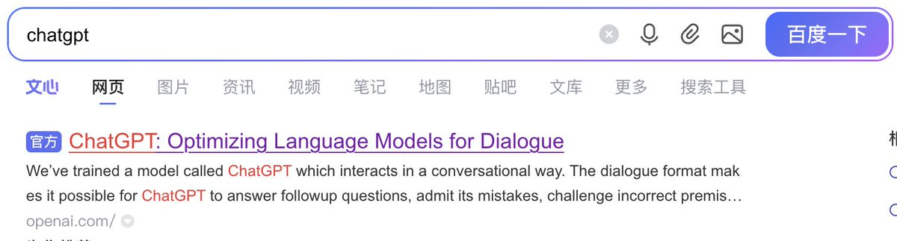

星野ふじ
@hoshinofujivy
不是😭认真上网的话，谁会用百度啊😭
虽然那时候我不会翻墙，但是我知道百度很烂，就一直用bing
为什么bing搜不出来
为什么百度当了一次人😭

星野ふじ
@hoshinofujivy
不是😭认真上网的话，谁会用百度啊😭
为什么bing搜不出来
为什么百度当了一次人😭 https://t.co/1tLLdV6kvb https://t.co/b8bfeWzgua
一只绿喵
@1greencat
@hoshinofujivy 首先 现在的话百度搜索第一个就是
其次 GPT把中国IP墙了，国内搜索引擎抓到的页面都是空的，当然会降权 https://t.co/NuxWbPN80J